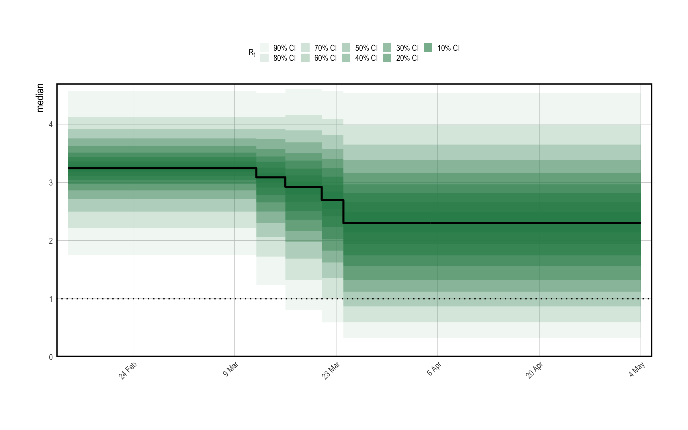

The Spanish flu example considered inferring the instantaneous reproduction number over time in a single population. Here, we demonstrate some of the more advanced modeling capabilities of the package. We strongly recommend reviewing the H1N1 vignette before continuing with this article.
Consider modeling the evolution of an epidemic in multiple regions. Of course, one can always specify separate models for each group. This approach is fast; each model can be fit independently in parallel. Nonetheless, often there is little high quality data for some groups, and the data does little to inform parameter estimates. This is particularly true in the early stages of an epidemic. Joining regions together using multilevel models can allows information to be shared between regions in a natural way, improving parameter estimates while still permitting between group variation.
In this article, we use a multilevel model to estimate the effect of non pharmaceutical interventions (NPIs) on the transmissibility of Covid-19. We consider the same setup as Flaxman, Mishra, Gandy, et al. (2020): attempting to estimate the effect of NPIs that were implemented in March 2020 in 11 European countries using daily death data, during the first wave of Covid-19. The same set of NPIs and countries are used here. Flaxman, Mishra, Scott, et al. (2020) considered a version of this model that used partial pooling for all NPI effects. Here, we consider a model that uses the same approach.
This example is not intended to be a fully rigorous statistical analysis. Rather, the intention is to demonstrate partial pooling of parameters in epidemia and how to infer their effect sizes. We also shows how to forecast observations into the future, and how to undertake counterfactual analyses.
Begin by loading required packages. dplyr will be used to manipulate the dataset, while rstanarm is used to define prior distributions.
We use a dataset EuropeCovid2, which is provided by epidemia. This contains
daily death and case data in the 11 countries concerned up until the 1st July
2020. The data derives from the WHO COVID-19 explorer as of the 5th of January
2021. This differs from the data used in Flaxman, Mishra, Gandy, et al. (2020), because case and death counts
have been adjusted retrospectively as new information came to light. epidemia
also has a dataset EuropeCovid which contains the same data as that in Flaxman, Mishra, Gandy, et al. (2020),
and this could alternatively be used for this exercise.
EuropeCovid2 also contains binary variables representing the set of five NPIs considered
in Flaxman, Mishra, Gandy, et al. (2020). These correspond to the closing of schools and universities, the
banning of public events, encouraging social distancing, requiring self isolation
if ill, and finally the implementation of full lockdown. The dates at which these
policies were enacted are exactly the same as those used in Flaxman, Mishra, Gandy, et al. (2020).
Load the dataset as follows.
## # A tibble: 6 x 11
## # Groups: country [1]
## id country date cases deaths schools_univers… self_isolating_…
## <chr> <chr> <date> <int> <int> <int> <int>
## 1 AT Austria 2020-01-03 0 0 0 0
## 2 AT Austria 2020-01-04 0 0 0 0
## 3 AT Austria 2020-01-05 0 0 0 0
## 4 AT Austria 2020-01-06 0 0 0 0
## 5 AT Austria 2020-01-07 0 0 0 0
## 6 AT Austria 2020-01-08 0 0 0 0
## # … with 4 more variables: public_events <int>, lockdown <int>,
## # social_distancing_encouraged <int>, pop <int>Recall that for each region, epidemia will use the earliest date in data
as the first date to begin seeding infections. Therefore, we must choose an
appropriate start date for each group. One option is to use the same rule as in Flaxman, Mishra, Gandy, et al. (2020),
and assume that seeding begins in each country 30 days prior to
observing 10 cumulative deaths. To do this, we filter the dataframe as follows.
This leaves the following assumed start dates.
## # A tibble: 11 x 3
## country start end
## <chr> <date> <date>
## 1 Austria 2020-02-23 2020-06-30
## 2 Belgium 2020-02-15 2020-06-30
## 3 Denmark 2020-02-22 2020-06-30
## 4 France 2020-02-09 2020-06-30
## 5 Germany 2020-02-16 2020-06-30
## 6 Italy 2020-01-28 2020-06-30
## 7 Norway 2020-02-26 2020-06-30
## 8 Spain 2020-02-09 2020-06-30
## 9 Sweden 2020-02-20 2020-06-30
## 10 Switzerland 2020-02-12 2020-06-30
## 11 United_Kingdom 2020-02-15 2020-06-30Although data contains observations up until the end of June, we use only
a subset of the data, so that we can hold out the rest to demonstrate forecasting.
Following Flaxman, Mishra, Gandy, et al. (2020), we use data up until the 5th May.
Recall that epidemia requires the user to specify three model components - transmission, infections, and observations. These are considered in turn.
We parametrise reproduction numbers \(R^{(m)}_{t}\) in terms of the NPI covariates. This will imply that \(R^{(m)}_{t}\) is a step function - possibly increasing or decreasing as policies come into play.
Let \(I^{(m)}_{1}, \ldots, I^{(m)}_{5}\) be a set of binary vectors such that \(I^{(m)}_{i,t} = 1\) if the \(i\)th NPI has been implemented in the \(m\)th country by time \(t\), and be \(0\) otherwise. We parameterise reproduction numbers as \[\begin{equation} R^{(m)}_{t} = R' g^{-1}\left(b^{(m)}_0 + \sum_{i=1}^{5}\left(\beta_i + b^{(m)}_i\right)I^{(m)}_{i,t}\right), \end{equation}\] where \(R' = 3.25\) and \(g\) is the logit-link. Parameters \(b^{(m)}_0\) are country intercepts, and each \(b^{(m)}_i\) is a country effects for the \(i\)th NPI. The intercepts allow countries to have differing \(R_0\)’s, and models variations in the inherent transmissibility of Covid-19 in each population. \(\beta_i\) is a fixed effect for the \(i\)th NPI. This models the average effect of an NPI across all countries considered.
The NPIs considered were implemented in quick succession across the countries considered, often with some being enacted simultaneously. Therefore they are highly colinear and so the effects \(\beta_i\) may be difficult to infer with uninformative priors. In particular, it is apriori unlikely that these NPIs served to increase transmission rates significantly, while they plausibly had a significant effect on reducing transmission. A symmetric prior like the Gaussian does not capture this intuition, and increases the difficulty in inferring effects, because they are more able to offset each other. This motivated the prior used in Flaxman, Mishra, Gandy, et al. (2020), which was a Gamma shifted to have support other than zero. We use the same prior here. Denoting the distribution of Gamma random variable with shape \(a\) and scale \(b\) by \(\Gamma(a, b)\), this prior is \[\begin{equation} -\beta_i - \frac{\log(1.05)}{6} \sim \Gamma(1/6, 1), \tag{1.1} \end{equation}\] whereby the shift allows the NPIs to increase transmission slightly. The country specific parameters are partially pooled by letting \[\begin{equation} b^{(m)}_i \sim N(0, \sigma_i), \end{equation}\] where \(\sigma_i\) are standard deviations, \(\sigma_0 \sim \Gamma(2, 0.25)\) and \(\sigma_i \sim \Gamma(0.5, 0.25)\) for all \(i > 0\). This gives the intercept terms more variability under the prior.
This model is expressed by the following call to epirt().
rt <- epirt( formula = R(country, date) ~ 0 + (1 + public_events + schools_universities + self_isolating_if_ill + social_distancing_encouraged + lockdown || country) + public_events + schools_universities + self_isolating_if_ill + social_distancing_encouraged + lockdown, prior = shifted_gamma(shape=1/6, scale = 1, shift = log(1.05)/6), prior_covariance = decov(shape = c(2, rep(0.5, 5)),scale=0.25), link = scaled_logit(6.5) )
Note that the operator || is used rather than | for the random effects. This
operator ensures that all effects for a given country are independent, as in the
model described above. Using | would alternatively give a prior on the full
covariance matrix, rather than on the individual \(\sigma_i\)s. The argument
prior reflects Equation (1.1). Since country effects are
assumed independent, the decov prior reduces to assigning Gamma priors to
each \(\sigma_i\). By using a vector rather than a scalar for the shape argument,
we are able to give the prior on the intercepts a larger shape parameter.
We keep infections simple here by using the basic version of the model. That is to say that infections are taken to be a deterministic function of seeds and reproduction numbers, propagated by the renewal process. Extensions to modeling infections as parameters and adjustments for the susceptible population are not considered. The model is defined as follows.
inf <- epiinf(gen = EuropeCovid$si, seed_days = 6)
EuropeCovid$si is a numeric vector giving the serial interval used in
Flaxman, Mishra, Gandy, et al. (2020). As in that work, we make no distinction between the generation
distribution and serial interval here.
Daily deaths are used in the model. In theory, additional types of data can be included in the model, but such extension are not considered here. A simple intercept model is used for the infection fatality rate (IFR). This makes the assumption that the IFR is constant over time. The model can be written as follows.
deaths <- epiobs( formula = deaths ~ 1, i2o = EuropeCovid2$inf2death, prior_intercept = normal(0,0.2), link = scaled_logit(0.02) )
By using link = scaled_logit(0.02), we let the IFR range between \(0\%\) and
\(2\%\). In conjunction with the symmetric prior on the intercept, this gives
the IFR a prior mean of \(1\%\). EuropeCovid2$inf2death is a numeric vector
giving the same distribution for the time from infection to death as that used in
Flaxman, Mishra, Gandy, et al. (2020).
Here, we use variational Bayes (VB) to fit the model as opposed to full MCMC sampling. This is because full MCMC sampling of a joint model of this size is computationally demanding, due in part to renewal processes having to be computed for each region and for each evaluation of the likelihood and its derivatives. MCMC should generally be used for final inference. Nonetheless, VB allows rapid iteration of models and may lead to reasonable estimates of effect sizes. For this example, we have also run full MCMC, and the inferences reported here are not substantially different.
It is useful to check the implied prior distribution on reproduction numbers before fitting a full model. This can catch obvious mistakes that can occur when specifying the transmission model, and can help affirm that the prior is reasonable.
In epidemia we can do this by using the priorPD = TRUE flag in
epim(). This discards the likelihood component of the posterior, leaving
just the prior. If we alogrithm = "sampling", HMC is used to sample parameters
from the prior. Here we use sampling rather than VB, partly because
sampling from the prior is relatively quick: it is the likelihood that is
expensive to evaluate. In addition, we have defined Gamma priors on some
coefficients, which are generally poorly approximated by VB.
args <- list(rt=rt, inf=inf, obs=deaths, data=data, seed=12345, refresh=0)
options(mc.cores = parallel::detectCores()) pr_args <- c(args, list(algorithm="sampling", iter=1e3, prior_PD=TRUE)) fm_prior <- do.call(epim, pr_args)
Below we plot approximate samples of \(R_{t,m}\) from the prior distribution.
## Registered S3 methods overwritten by 'car':
## method from
## influence.merMod lme4
## cooks.distance.influence.merMod lme4
## dfbeta.influence.merMod lme4
## dfbetas.influence.merMod lme4
Recall that the model will be fit using VB. In particular, algorithm = "fullrank"
is used. This is generally
preferable to "meanfield" for these models - largely because "meanfield"
ignores posterior correlations. We decrease the parameter tol_rel_obj from
its default, and increase the number of iterations to aid convergence.
args$algorithm <- "fullrank" args$iter <- 5e4 args$tol_rel_obj <- 1e-3 fm <- do.call(epim, args)
## Warning: Pareto k diagnostic value is 3.32. Resampling is disabled. Decreasing
## tol_rel_obj may help if variational algorithm has terminated prematurely.
## Otherwise consider using sampling instead.A first step in evaluating the model fit is to perform posterior predictive
checks. This is to confirm that the model adequately explains the observed
daily deaths in each region. This can be done using the command
plot_obs(fm, type = "deaths", levels = c(50, 95)). The plot is shown in Figure 1.1.
Figure 1.1: Posterior predictive checks. Observed data is plotted with credible intervals derived from the approximated posterior.
Figure 1.1 suggest that the epidemic was bought under control
in each group considered, with reproduction numbers falling below one everywhere.
Indeed, we would expect that the posterior reproduction numbers fall below one
in each region. Figure 1.2 is the result of plot_rt(fm, step = T, levels = c(50,95)), and confirms this.
Figure 1.2: Credible intervals for reproduction numbers. These are step functions because \(R_t\) is parameterised only in terms of NPIs.
In epidemia, estimated effect sizes can be visualised using the plot.epimodel
method. This serves a similar purpose to plot.stanreg in rstanarm,
providing an interface to the bayesplot package. The models in epidemia
often have many parameters, some of which pertain to a particular part of the model
(i.e. transmission), and some which pertain to particular
groups (i.e., country-specific terms). Therefore plot.epimodel has
arguments par_models, par_types and par_groups, which restrict the
parameters considered to particular parts of the model.
As an example, one can plot credible intervals for the global
coefficients \(\beta_i\) using the command
plot(fm, par_models = "R", par_types = "fixed"). This leads to
1.3.
## Scale for 'y' is already present. Adding another scale for 'y', which will
## replace the existing scale.Figure 1.3: Effect sizes for global coefficients.
Figure 1.3 shows a large negative coefficient for lockdown,
suggesting that this is on average the most effective intervention.
The effect of banning public events is the next largest, while the other NPIs appear closer
to zero. Note that 1.3 shows only global coefficients, and does
not show inferred effects in any given country. To assess the latter, one must
instead consider the quantities \(\beta_i + b^{(m)}_i\). We do this by
extracting the underlying draws using as.matrix.epimodel, as is done below
for Italy.
beta <- as.matrix(fm, par_models = "R", par_types = "fixed") b <- as.matrix(fm, regex_pars = "^R\\|b", par_groups = "Italy") mat <- cbind(b[,1], beta + b[,2:6]) colnames(mat) <- c("Intercept", labels)
bayesplot::mcmc_intervals(mat) gives
Figure 1.4.
Figure 1.4: Total effect Sizes
Figure 1.4 has relatively narrow intervals for many of the effect sizes. This appears to be an artifact of using variational Bayes. In particular, when repeating this analysis with full MCMC, we observe that the intervals for all policies other than lockdown overlap with zero.
Consider now the role of partial pooling in this analysis. Figure 1.2 shows that Sweden did enough to reduce \(R\) below one. However, it did so without a full lockdown. Given the small effect sizes for other NPIs, the model must explain Sweden using the country-specific terms. Figure 1.5 shows estimated seeds, intercepts and the effects of banning public events for each country. Sweden has a lower intercept than other terms which in turn suggests a lower \(R_0\) - giving the effects less to do to explain Sweden. There is greater variability in seeding, because the magnitude of future infections becomes less sensitive to initial conditions when the rate of growth is lower. Figure 1.5 shows that the model estimates a large negative coefficient for public events in Sweden. This is significantly larger then the effects for other policies - which are not reported here. However, the idiosyncrasies relating to Sweden must be explained in this model by at least one of the covariates, and the large effect for public policy in Sweden is most probably an artifact of this. Nonetheless, the use of partial pooling is essential for explaining difference between countries. If full pooling were used, effect sizes would be overly influenced by outliers like Sweden. This argument is made in more detail in Flaxman, Mishra, Scott, et al. (2020).
Figure 1.5: Seeds, intercepts and public polic effects for each country
Forecasting within epidemia is straightforward, and consists of constructing a new dataframe which is used in place of the original dataframe. This could, for example, change the values of covariates, or alternatively include new observations in order to check the out-of-sample performance of the fitted model.
Recall that EuropeCovid2 holds daily death data up until the end of
June 2020, however we only fitted the model up until the \(5\)th May. The
following constructs a dataframe newdata which contains the additional
observations. Note that we are careful to select the same start dates as in
data.
newdata <- EuropeCovid2$data newdata <- filter(newdata, date > date[which(cumsum(deaths) > 10)[1] - 30])
This dataframe can be passed to plotting functions plot_rt(), plot_obs(),
plot_infections() and plot_infectious(). If the raw samples are desired, we
can also pass as an argument to posterior_rt(), posterior_predict() etc.
Figure 1.6 is the result of using the command
plot_obs(fm, type = "deaths", newdata = newdata, groups = "Italy"). This
plots the out of sample observations with credible intervals from the forecast.
Figure 1.6: Forecasted and observed daily deaths in Italy up until the end of June 2020
Counterfactuals are also easy. Again, one simply has to modify the dataframe used. In this case we shift all NPIs back three days.
shift_earlier <- function(x, k) c(x[-(1:k)], rep(1,k)) days <- 3 newdata <- mutate(newdata, lockdown = shift_earlier(lockdown, days), public_events = shift_earlier(public_events, days), social_distancing_encouraged = shift_earlier(social_distancing_encouraged, days), self_isolating_if_ill = shift_earlier(self_isolating_if_ill, days), schools_universities = shift_earlier(schools_universities, days) )
Figure 1.7 visualises the counterfactual scenario of all
policies being implemented in the UK three days earlier. Deaths are projected
over both the in-sample period, and the out of sample period. The left plot
is obtained using plot_obs(fm, type = "deaths", newdata=newdata, groups = "United_Kingdom"),
while the right plot adds the cumulative = TRUE argument. We reiterate that hese results are
not intended to be statistically rigorous - simply to illustrate usage of epidemia.
Figure 1.7: Counterfactual for UK where all NPIs implemented 3 days earlier. Left is daily deaths, right is cumulative.
Flaxman, Seth, Swapnil Mishra, Axel Gandy, H Juliette T Unwin, Thomas A Mellan, Helen Coupland, Charles Whittaker, et al. 2020. “Estimating the effects of non-pharmaceutical interventions on COVID-19 in Europe.” Nature. https://doi.org/10.1038/s41586-020-2405-7.
Flaxman, Seth, Swapnil Mishra, James Scott, Neil Ferguson, Axel Gandy, and Samir Bhatt. 2020. “Reply to: The Effect of Interventions on Covid-19.” Nature 588 (7839): E29–E32. https://doi.org/10.1038/s41586-020-3026-x.